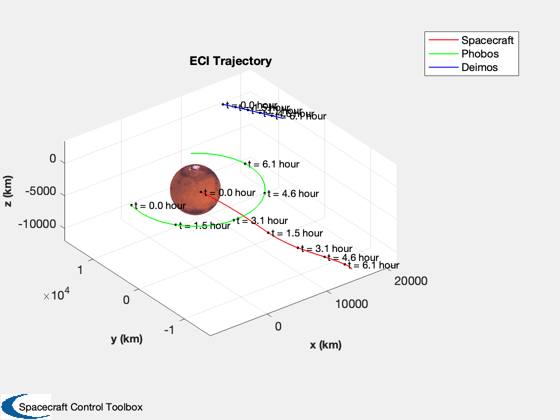

Spacecraft simulation around Mars with Phobos and Deimos
You can select orbital elements for the spaceraft The initial states for Phobos and Deimos are from the NASA Horizons system. Uses RK4 to propagate the orbits.
http://ssd.jpl.nasa.gov/horizons.cgi
See also RHSMarsOrbit, RPRA2AE, El2RV, PlotPlanetOrbit, Constant, RK4
Contents
%-------------------------------------------------------------------------- % Copyright (c) 2016 Princeton Satellite Systems, Inc. % All Rights Reserved. %-------------------------------------------------------------------------- % Since 2017.1 %-------------------------------------------------------------------------- % Constants muMars = Constant('mu mars'); rMars = Constant('equatorial radius mars'); % User inputs hP = 2000; % Altitude at perigee [a,e] = RPRA2AE(rMars+hP, rMars+10*hP); i = 0; % Inclination lon = 0; % Longitude of the ascending node arg = 0; % Argument of perigee meanA = 0; % Mean anomaly tEnd = 7.6538*3600; % One Deimos orbit period is 30.312 hours Phobos is 7.6538 hours dT = 100;
Create the state vector [spacecraft;phobos;deimos]
jD0 = 2457504.5; xMars = [-1.556270572128525E+08 -1.588260151341932E+08 -6.864850347069533E+07... 1.892393454800366E+01 -1.265972881093017E+01 -6.317572782411839E+00]'; xDeimos = [-1.556471976805823E+08 -1.588240996199218E+08 -6.863662644229279E+07... 1.853761291642451E+01 -1.387018839272505E+01 -6.776942570158258E+00]'; xPhobos = [-1.556243982587785E+08 -1.588334963677697E+08 -6.865370813242640E+07... 2.070933433329652E+01 -1.167145060591693E+01 -6.857269178105281E+00]'; % Spacecraft state [r,v] = El2RV([a i lon arg e meanA],[],muMars); % Full state vector x = [r;v;xPhobos-xMars;xDeimos-xMars];
Simulation
n = ceil(tEnd/dT); % Total number of integration steps xP = zeros(length(x),n); dT = tEnd/n; for k = 1:n xP(:,k) = x; x = RK4(@RHSMarsOrbit,x,dT,0,muMars); end
Plotting
jD = jD0 + (0:n-1)*dT/86400;
PlotPlanetOrbit( xP, jD, {'Spacecraft' 'Phobos' 'Deimos'}, 'Mars', 1 );
%--------------------------------------
% $Id: 6e6816218158bc810c80ee20bc637f2b4858da1f $
